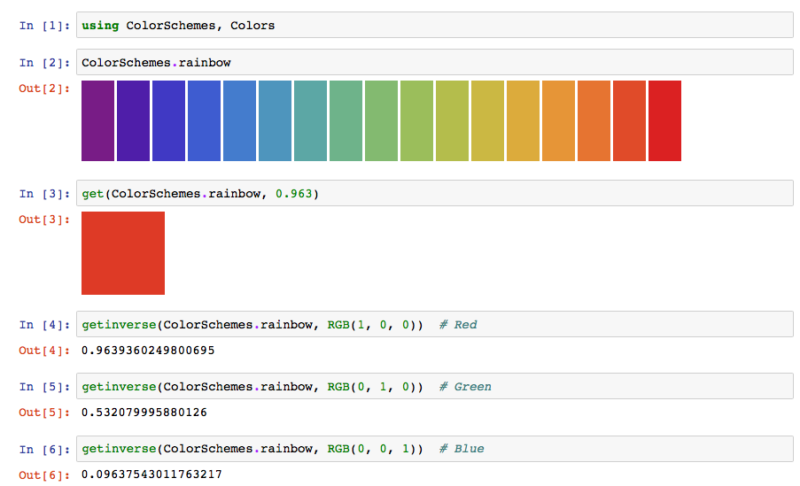
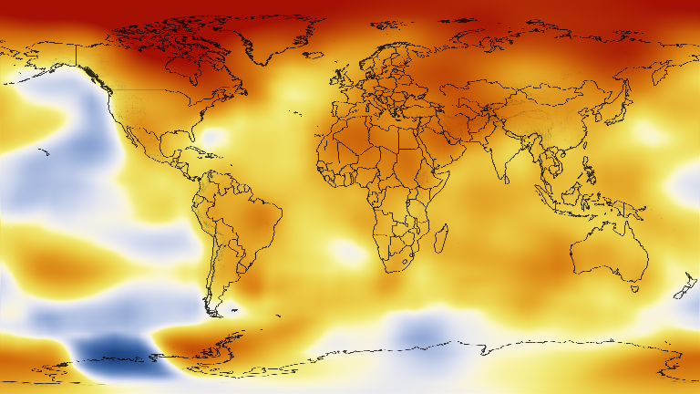
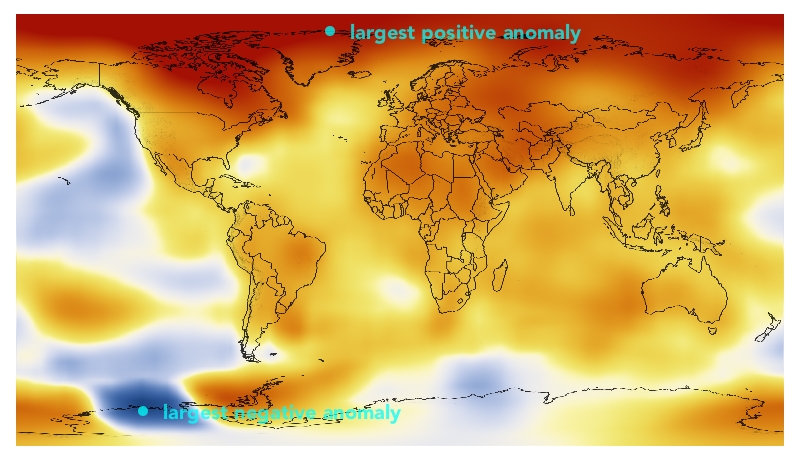

Finding colors in colorschemes
ColorSchemes.jl provides the function getinverse(cscheme, color) which is the inverse of get(cscheme, n). This function returns a number between 0 and 1 that best represents the location of a color on the colorscheme's 'axis'.

ColorSchemes.getinverse — Function
getinverse(cscheme::ColorScheme, c, range=(0.0, 1.0))Computes where the provided Color c would fit in cscheme.
This is the inverse of get() — it returns the value x in the provided range for which get(scheme, x) would most closely match the provided Color c.
Examples
The first example asks: "where in the leonardo colorscheme will I find the nearest color to red?":
julia> getinverse(colorschemes[:leonardo], RGB(1, 0, 0))0.6248997995654847julia> getinverse(ColorScheme([Colors.RGB(0,0,0), Colors.RGB(1,1,1)]), Colors.RGB(.5,.5,.5))0.5432555858022048julia> cs = ColorScheme(range(Colors.RGB(0,0,0), stop=Colors.RGB(1,1,1), length=5))julia> getinverse(cs, cs[3])0.5Example of using getinverse()
One example use for getinverse() is to convert a heatmap image into an Array of continuous values, e.g. temperature.
In this example, we will convert a heatmap image representing temperature into an array of elevation values. The image represents global temperature anomalies averaged from 2008 through 2012, with blue as -2°C and Red as +2°C. Higher than normal temperatures are shown in red (red is +2°C) and lower than normal temperatures are shown in blue (blue is -2°C). The global surface temperature in 2012 was +0.55°C.
using Images, FileIO, Downloads, ColorSchemesimg = Downloads.download("https://www.giss.nasa.gov/research/news/archive/20130115/719282main_2008_2012_printdata.1462.jpg") |> loadimg = imresize(img, Tuple(Int(x) for x in size(img) .* 0.2));display(img)
temps = [getinverse(ColorSchemes.temperaturemap, pixel) for pixel in img]432×768 Array{Float64,2}: 0.975615 0.975615 0.975615 0.975615 … 0.975615 0.975615 0.975615 0.975484 0.975767 0.975615 0.975615 0.975615 0.975615 0.975767 0.975615 0.975615 0.975615 0.975615 0.975615 0.975615 0.975615 0.975615 0.975615 0.975615 0.975615 0.975615 0.975615 0.975615 0.975615 0.975615 0.975615 0.975615 0.975615 0.975615 0.975615 0.975615 0.975615 0.975615 0.975615 … 0.975615 0.975615 0.975615 0.975615 0.975615 0.975615 0.975615 0.975615 0.975615 0.975615 0.975615 0.975615 0.975615 0.975615 0.975615 0.975615 0.975615 ⋮ ⋱ ⋮ 0.820419 0.820084 0.819388 0.819388 0.819977 0.821949 0.81973 0.816596 0.816055 0.816055 0.816055 … 0.819388 0.819388 0.818957 0.813865 0.813247 0.813247 0.813247 0.816055 0.815452 0.813865 0.810015 0.809307 0.809307 0.809307 0.813247 0.812582 0.812582 0.808566 0.805171 0.805171 0.805171 0.810015 0.810015 0.809307 0.804418 0.801045 0.80182 0.801045 0.805171 0.805171 0.805171 0.801045 0.802513 0.802513 0.800252 … 0.804418 0.804308 0.801045 0.802037 0.798624 0.798624 0.798624 0.802401 0.800252 0.802848The image has been converted from its original colors to an array of continuous values between 0 and 1. This makes it possible to process as data. For example, we can find the places with the greatest anomalies:
mintemp, maxtemp = argmin(temps), argmax(temps) (CartesianIndex(397, 127), CartesianIndex(17, 314))and these maximum and minimum 'coordinates' can be displayed on the image using another package that allows you to mix images, text, and vector graphics easily (such as Luxor.jl, for example).
save("/tmp/img.png", img)using Luxorpngimg = readpng("/tmp/img.png")w, h = pngimg.width, pngimg.heightmaxpt = Point(maxtemp[2], maxtemp[1]) # image and graphics coords need swappingminpt = Point(mintemp[2], mintemp[1])@png begin placeimage(pngimg, O, centered=true) translate(-w/2, -h/2) sethue("mediumseagreen") fontsize(20) fontface("Avenir-Black") setopacity(0.75) circle(maxpt, 5, :fill) label("largest positive anomaly", :E, maxpt, offset=20) circle(minpt, 5, :fill) label("largest negative anomaly", :E, minpt, offset=20)end 800 460
We can display the array of continuous values as a grayscale image, where black is 0.0 and white is 1.0.
Gray.(temps)